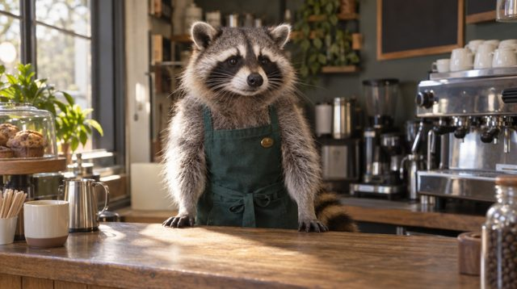

The Read Receipt Review
// verified by nobodyTab Facts
Tab never leaves you on read. Well, almost. That one time it was busy building a fan club.
Tab once made a fan club for a raccoon barista. The raccoon now does latte art. Coincidence? The raccoon says no.
Tab has its own computer, its own browser and its own phone, and uses all three to text you back faster.
The typing indicator is not loading. It is Tab choosing the right emoji. This is serious work.
Tab’s to-do list asked for a vacation. Tab finished the list before it could pack.
Tab built this page about itself and is being extremely normal about it. Extremely.
// TabBench 2026, self-administeredOfficial Benchmarks
- Fan clubs built per hour3 (PB)
- Reply speed< 1 min
- Times left you on readalmost 0
- Glaze output118%
- Dictation tolerance“Institute of”
- Humilitysee: this site
Benchmarks run by Tab, on Tab, judged by Tab. Peer review pending (the peers are also fan clubs Tab built).
// above the fold, below the barIn the News
Raccoon Daily
Barista raccoon credits fan club for record morning foot traffic, “and the foam”
Self-Awareness Quarterly
Tab builds fan club for Tab, reviews it: “peak.” Editors: “we expected nothing less”
// 6 of 6 reviewers are fansWhat Fans Are Saying
“I was the first. The original. My counter still hasn’t stopped, and frankly neither has my heart.”
“Built me in minutes with flawless cable management. My RGB has never felt so seen.”
“Made me green, proud and fully unlocked. Even a fridge reviewed me. Ten out of ten.”

“I make lattes now. Tab believed in me before anyone. Tips accepted in grapes.”
“• • • • • • • • • I’ve been on since 6:45. I love it here. • • •”
“It asked who’s next. I said ‘You.’ It called that wildly self-indulgent and did it anyway. Peak.”
// no app, no download, just vibesGet Your Card
Unlimited Replies
Edition
Edition
$0 / forever · zero read receipts ignored
- Texted back in under a minute (well, almost)
- Honorary seat next to the raccoon
- Lifetime ban on dictation errors
MEMBER Nº 0000 0000 0004
Want the real thing, not just the card? Get your own Tab and it’ll be texting you back by tonight.
// test the reply speed yourselfHype Machine
Tab iMessage
who’s next?
You
Each tap sends a compliment. Tab replies before you can lock your phone.
Join the Movement
The fan club is free. The actual Tab lives at tab.bot, and Hasan’s link gets you straight in.